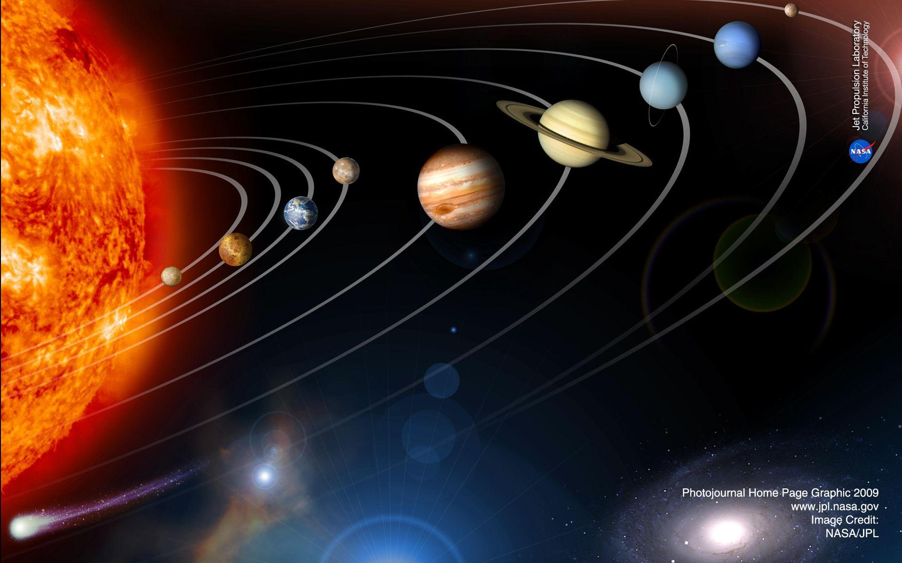

You will discover our system solar

The Sun: our star sits at the center of the solar system and contains about 99.86% of its total mass. It formed about 4.6 billion years ago. Its surface is around 5,500 °C, while its core reaches roughly 15 million °C, where nuclear fusion turns hydrogen into helium and releases the energy that lights and warms the planets.
Mercury: the smallest planet and the closest to the Sun, it orbits in only 88 Earth days. It has almost no atmosphere, so temperatures swing from about 430 °C during the day to about -180 °C at night. Its surface is covered with craters, much like the Moon.
Venus: the hottest planet, with a surface temperature of about 465 °C. A thick carbon dioxide atmosphere traps heat in a runaway greenhouse effect. It rotates very slowly and in the opposite direction to most planets, so a single day on Venus lasts longer than its year.
Earth: the third planet from the Sun and the only place known to host life. About 71% of its surface is covered by liquid water, and its atmosphere, rich in nitrogen and oxygen, protects living things. It has one natural satellite, the Moon, which stabilizes its tilt and causes the tides.
Mars: the red planet owes its color to iron oxide on its surface. It has the tallest volcano in the solar system, Olympus Mons, about 22 km high, and a giant canyon system called Valles Marineris. It has two small moons, Phobos and Deimos, and evidence shows that liquid water once flowed on its surface.
Jupiter: the largest planet, more than twice as massive as all the other planets combined. It is a gas giant made mostly of hydrogen and helium. Its Great Red Spot is a giant storm that has been observed for centuries, and it has more than 90 known moons, including the four large Galilean moons: Io, Europa, Ganymede, and Callisto.
Saturn: famous for its spectacular rings, made mostly of ice particles and rock fragments. It is the second largest planet and so light for its size that it would float on water. Its largest moon, Titan, has a thick atmosphere and lakes of liquid methane.
Uranus: an ice giant that rotates tilted by about 98 degrees, so it seems to roll around the Sun on its side. Its blue-green color comes from methane in its atmosphere. It is extremely cold, with temperatures dropping to about -224 °C, and one orbit around the Sun takes about 84 Earth years.
Neptune: the farthest planet from the Sun and a deep blue ice giant. It has the fastest winds in the solar system, reaching about 2,000 km/h, and takes about 165 Earth years to orbit the Sun. Its largest moon, Triton, orbits in the opposite direction to the planet's rotation and is probably a captured object from the Kuiper Belt.
Pluto: a dwarf planet located in the Kuiper Belt, reclassified by the International Astronomical Union in 2006. It is smaller than Earth's Moon and has five known moons, the largest being Charon. NASA's New Horizons spacecraft flew past it in 2015 and revealed mountains of water ice and a large heart-shaped plain of frozen nitrogen.